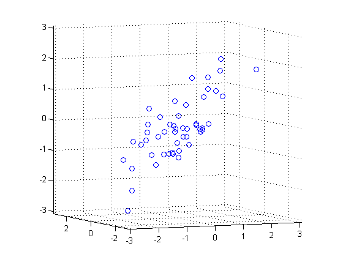
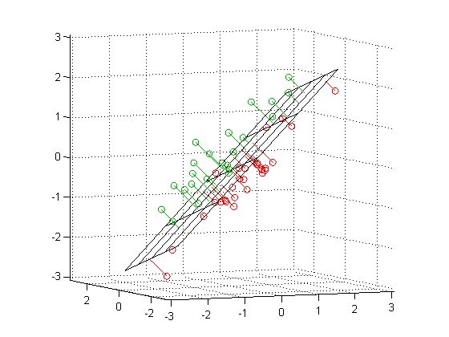
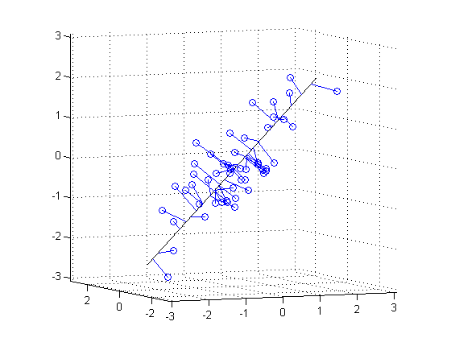

Fitting an Orthogonal Regression Using Principal Components Analysis
Principal Components Analysis can be used to fit a linear regression that minimizes the perpendicular distances from the data to the fitted model. This is the linear case of what is known as Orthogonal Regression or Total Least Squares, and is appropriate when there is no natural distinction between predictor and response variables, or when all variables are measured with error. This is in contrast to the usual regression assumption that predictor variables are measured exactly, and only the response variable has an error component.
For example, given two data vectors x and y, you can fit a line that minimizes the perpendicular distances from each of the points (x(i), y(i)) to the line. More generally, with p observed variables, you can fit an r-dimensional hyperplane in p-dimensional space (r < p). The choice of r is equivalent to choosing the number of components to retain in PCA. It may be based on prediction error, or it may simply be a pragmatic choice to reduce data to a manageable number of dimensions.
In this example, we fit a plane and a line through some data on three observed variables. It's easy to do the same thing for any number of variables, and for any dimension of model, although visualizing a fit in higher dimensions would obviously not be straightforward.
Contents
Fitting a Plane to 3-D Data
First, we generate some trivariate normal data for the example. Two of the variables are fairly strongly correlated.
randn('state',0); X = mvnrnd([0 0 0], [1 .2 .7; .2 1 0; .7 0 1],50); plot3(X(:,1),X(:,2),X(:,3),'bo'); grid on; maxlim = max(abs(X(:)))*1.1; axis([-maxlim maxlim -maxlim maxlim -maxlim maxlim]); axis square view(-23.5,5);
Next, we fit a plane to the data using PCA. The coefficients for the first two principal components define vectors that form a basis for the plane. The third PC is orthogonal to the first two, and its coefficients define the normal vector of the plane.
[coeff,score,roots] = princomp(X); basis = coeff(:,1:2)
basis =
0.7139 0.1302
0.0008 0.9824
0.7003 -0.1338
normal = coeff(:,3)
normal =
-0.6880
0.1867
0.7012
That's all there is to the fit. But let's look closer at the results, and plot the fit along with the data.
Because the first two components explain as much of the variance in the data as is possible with two dimensions, the plane is the best 2-D linear approximation to the data. Equivalently, the third component explains the least amount of variation in the data, and it is the error term in the regression. The latent roots (or eigenvalues) from the PCA define the amount of explained variance for each component.
pctExplained = roots' ./ sum(roots)
pctExplained =
0.6825 0.2235 0.0940
The first two coordinates of the principal component scores give the projection of each point onto the plane, in the coordinate system of the plane. To get the coordinates of the fitted points in terms of the original coordinate system, we multiply each PC coefficient vector by the corresponding score, and add back in the mean of the data. The residuals are simply the original data minus the fitted points.
[n,p] = size(X); meanX = mean(X,1); Xfit = repmat(meanX,n,1) + score(:,1:2)*coeff(:,1:2)'; residuals = X - Xfit;
The equation of the fitted plane, satisfied by each of the fitted points in Xfit, is ([x1 x2 x3] - meanX)*normal = 0. The plane passes through the point meanX, and its perpendicular distance to the origin is meanX*normal. The perpendicular distance from each point in X to the plane, i.e., the norm of the residuals, is the dot product of each centered point with the normal to the plane. The fitted plane minimizes the sum of the squared errors.
error = abs((X - repmat(meanX,n,1))*normal); sse = sum(error.^2)
sse = 11.0788
To visualize the fit, we can plot the plane, the original data, and their projection to the plane.
[xgrid,ygrid] = meshgrid(linspace(min(X(:,1)),max(X(:,1)),5), ... linspace(min(X(:,2)),max(X(:,2)),5)); zgrid = (1/normal(3)) .* (meanX*normal - (xgrid.*normal(1) + ygrid.*normal(2))); h = mesh(xgrid,ygrid,zgrid,'EdgeColor',[0 0 0],'FaceAlpha',0); hold on above = (X-repmat(meanX,n,1))*normal > 0; below = ~above; nabove = sum(above); X1 = [X(above,1) Xfit(above,1) nan*ones(nabove,1)]; X2 = [X(above,2) Xfit(above,2) nan*ones(nabove,1)]; X3 = [X(above,3) Xfit(above,3) nan*ones(nabove,1)]; plot3(X1',X2',X3','-', X(above,1),X(above,2),X(above,3),'o', 'Color',[0 .7 0]); nbelow = sum(below); X1 = [X(below,1) Xfit(below,1) nan*ones(nbelow,1)]; X2 = [X(below,2) Xfit(below,2) nan*ones(nbelow,1)]; X3 = [X(below,3) Xfit(below,3) nan*ones(nbelow,1)]; plot3(X1',X2',X3','-', X(below,1),X(below,2),X(below,3),'o', 'Color',[1 0 0]); hold off maxlim = max(abs(X(:)))*1.1; axis([-maxlim maxlim -maxlim maxlim -maxlim maxlim]); axis square view(-23.5,5);
Green points are above the plane, red points are below.
Fitting a Line to 3-D Data
Fitting a straight line to the data is even simpler, and because of the nesting property of PCA, we can use the components that have already been computed. The direction vector that defines the line is given by the coefficients for the first principal component. The second and third PCs are orthogonal to the first, and their coefficients define directions that are perpendicular to the line. The simplest equation to describe the line is meanX + t*dirVect, where t parameterizes the position along the line.
dirVect = coeff(:,1)
dirVect =
0.7139
0.0008
0.7003
The first coordinate of the principal component scores gives the projection of each point onto the line. As with the 2-D fit, the PC coefficient vectors multiplied by the scores the gives the fitted points in the original coordinate system.
Xfit1 = repmat(meanX,n,1) + score(:,1)*coeff(:,1)';
Plot the line, the original data, and their projection to the line.
t = [min(score(:,1))-.2, max(score(:,1))+.2]; endpts = [meanX + t(1)*dirVect'; meanX + t(2)*dirVect']; plot3(endpts(:,1),endpts(:,2),endpts(:,3),'k-'); X1 = [X(:,1) Xfit1(:,1) nan*ones(n,1)]; X2 = [X(:,2) Xfit1(:,2) nan*ones(n,1)]; X3 = [X(:,3) Xfit1(:,3) nan*ones(n,1)]; hold on plot3(X1',X2',X3','b-', X(:,1),X(:,2),X(:,3),'bo'); hold off maxlim = max(abs(X(:)))*1.1; axis([-maxlim maxlim -maxlim maxlim -maxlim maxlim]); axis square view(-23.5,5); grid on
While it appears that some of the projections in this plot are not perpendicular to the line, that's just because we're plotting 3-D data in two dimensions. In a live MATLAB(R) figure window, you could interactively rotate the plot to different perspectives to verify that the projections are indeed perpendicular, and to get a better feel for how the line fits the data.